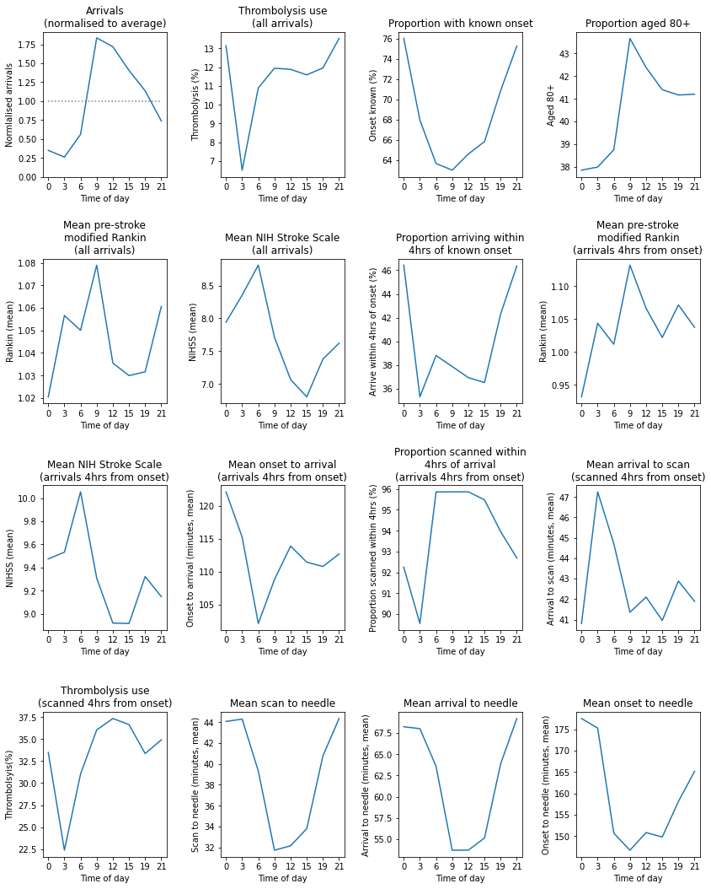

Pathway patterns throughout the day in an example single stroke team¶
Aims¶
Show key pathway statistics broken down by time of day (3 hour epochs) in a single example team.
Import libraries and data¶
Data has been resticted to stroke teams with at least 300 admissions, with at least 10 patients receiving thrombolysis, over three years.
# import libraries
import matplotlib.pyplot as plt
import numpy as np
import pandas as pd
# Display entire dataframes
pd.set_option("display.max_rows", 999, "display.max_columns", 150)
# import data
raw_data = pd.read_csv(
'./../data/2019-11-04-HQIP303-Exeter_MA.csv', low_memory=False)
headings = list(raw_data)
print (headings)
['StrokeTeam', 'PatientUID', 'Pathway', 'S1AgeOnArrival', 'MoreEqual80y', 'S1Gender', 'S1Ethnicity', 'S1OnsetInHospital', 'S1OnsetToArrival_min', 'S1OnsetDateType', 'S1OnsetTimeType', 'S1ArriveByAmbulance', 'S1AdmissionHour', 'S1AdmissionDay', 'S1AdmissionQuarter', 'S1AdmissionYear', 'CongestiveHeartFailure', 'Hypertension', 'AtrialFibrillation', 'Diabetes', 'StrokeTIA', 'AFAntiplatelet', 'AFAnticoagulent', 'AFAnticoagulentVitK', 'AFAnticoagulentDOAC', 'AFAnticoagulentHeparin', 'S2INR', 'S2INRHigh', 'S2INRNK', 'S2NewAFDiagnosis', 'S2RankinBeforeStroke', 'Loc', 'LocQuestions', 'LocCommands', 'BestGaze', 'Visual', 'FacialPalsy', 'MotorArmLeft', 'MotorArmRight', 'MotorLegLeft', 'MotorLegRight', 'LimbAtaxia', 'Sensory', 'BestLanguage', 'Dysarthria', 'ExtinctionInattention', 'S2NihssArrival', 'S2BrainImagingTime_min', 'S2StrokeType', 'S2Thrombolysis', 'Haemorrhagic', 'TimeWindow', 'Comorbidity', 'Medication', 'Refusal', 'Age', 'Improving', 'TooMildSevere', 'TimeUnknownWakeUp', 'OtherMedical', 'S2ThrombolysisTime_min', 'S2TIAInLastMonth']
Restrict original data to hospitals with at least 300 admissions + 10 thrombolysis patients¶
keep = []
groups = raw_data.groupby('StrokeTeam') # creates a new object of groups of data
for index, group_df in groups: # each group has an index and a dataframe of data
# Skip if total admissions less than 300 or total thrombolysis < 10
admissions = group_df.shape[0]
thrombolysis_received = group_df['S2Thrombolysis'] == 'Yes'
if (admissions < 300) or (thrombolysis_received.sum() < 10):
continue
else:
keep.append(group_df)
# Concatenate output
data = pd.DataFrame()
data = pd.concat(keep)
Remove in-hospital onset
mask = data['S1OnsetInHospital'] == 'No'
data = data[mask]
Restrict to single stroke_team¶
team_pick = 0
teams = list(set(data['StrokeTeam']))
teams.sort()
team = teams[team_pick]
mask = data['StrokeTeam'] == team
selected_data = data[mask]
print (f'Arrivals {mask.sum()}')
Arrivals 2015
Group by time of day¶
# Work on copy of data
data_time = data.copy()
# Set up results DataFrame
time_summary = pd.DataFrame()
# Count arrivals
time_summary['Arrivals'] = \
data_time.groupby('S1AdmissionHour').count()['StrokeTeam']
# Get thrombolysis rate
thrombolysed = data_time['S2Thrombolysis'] == 'Yes'
data_time['thrombolysed'] = thrombolysed
time_summary['thrombolyse_all'] = \
data_time.groupby('S1AdmissionHour').mean()['thrombolysed']
# Get proportion of strokes with known onset
onset_known = (data_time['S1OnsetTimeType'] == 'Best estimate') | \
(data_time['S1OnsetTimeType'] == 'Precise')
data_time['onset_known'] = onset_known
time_summary['onset_known'] = \
data_time.groupby('S1AdmissionHour').mean()['onset_known']
# Get proportion over 80
data_time['age_80_plus'] = data_time['MoreEqual80y'] == 'Yes'
time_summary['age_80_plus'] = \
data_time.groupby('S1AdmissionHour').mean()['age_80_plus']
# Get Rankin score
time_summary['rankin_all'] = \
data_time.groupby('S1AdmissionHour').mean()['S2RankinBeforeStroke']
# Get NIHSS
time_summary['nihss_all'] = \
data_time.groupby('S1AdmissionHour').mean()['S2NihssArrival']
# Get onset to arrival <4hrs and then restrict data
data_time['4hr_arrival'] = data_time['S1OnsetToArrival_min'] <= 240
time_summary['4hr_arrival'] = \
data_time.groupby('S1AdmissionHour').mean()['4hr_arrival']
mask = data_time['4hr_arrival']
data_time = data_time[mask]
# Get Rankin score of arrivals within 4hrs onset
time_summary['rankin_4hr'] = \
data_time.groupby('S1AdmissionHour').mean()['S2RankinBeforeStroke']
# Get NIHSS of arrivals within 4hrs onset
time_summary['nihss_4hr'] = \
data_time.groupby('S1AdmissionHour').mean()['S2NihssArrival']
# Get onset to arrival (of those arriving within 4 hours)
time_summary['onset_arrival'] = \
data_time.groupby('S1AdmissionHour').mean()['S1OnsetToArrival_min']
# Get scan in four hours (and remove rest)
data_time['4hr_scan'] = data_time['S2BrainImagingTime_min'] <= 240
time_summary['scan_4hrs'] = \
data_time.groupby('S1AdmissionHour').mean()['4hr_scan']
mask = data_time['4hr_scan']
data_time = data_time[mask]
# Get arrival to scan (of those arriving within 4 hours and scanned in 4hrs)
time_summary['arrival_scan'] = \
data_time.groupby('S1AdmissionHour').mean()['S2BrainImagingTime_min']
# Filter down to acanned within 4 hrs onset
onset_to_scan = (
data_time['S1OnsetToArrival_min'] + data_time['S2BrainImagingTime_min'])
data_time['onset_to_scan'] = onset_to_scan
mask = data_time['onset_to_scan'] <= 240
data_time = data_time[mask]
# Get thrombolysis given and remove rest
time_summary['thrombolyse_4hr'] = \
data_time.groupby('S1AdmissionHour').mean()['thrombolysed']
mask = data_time['thrombolysed']
# Get scan to needle
scan_to_needle = (
data_time['S2ThrombolysisTime_min'] - data_time['S2BrainImagingTime_min'])
data_time['scan_needle'] = scan_to_needle
time_summary['scan_to_needle'] = \
data_time.groupby('S1AdmissionHour').mean()['scan_needle']
# Get arrival to needle
time_summary['arrival_to_needle'] = \
data_time.groupby('S1AdmissionHour').mean()['S2ThrombolysisTime_min']
# Get onset to needle
onset_to_needle = (
data_time['S1OnsetToArrival_min'] + data_time['S2ThrombolysisTime_min'])
data_time['onset_to_needle'] = onset_to_needle
time_summary['onset_to_needle'] = \
data_time.groupby('S1AdmissionHour').mean()['onset_to_needle']
# Add short time start (string) column for plots
hour = ['0', '3', '6', '9', '12', '15', '19', '21']
time_summary['hour'] = hour
Show summary table by time of day¶
time_summary.T
| S1AdmissionHour | 00:00 to 02:59 | 03:00 to 05:59 | 06:00 to 08:59 | 09:00 to 11:59 | 12:00 to 14:59 | 15:00 to 17:59 | 18:00 to 20:59 | 21:00 to 23:59 |
|---|---|---|---|---|---|---|---|---|
| Arrivals | 9890 | 7367 | 15871 | 52049 | 48687 | 39838 | 32200 | 20918 |
| thrombolyse_all | 0.131446 | 0.0651554 | 0.109004 | 0.119464 | 0.118882 | 0.115945 | 0.119658 | 0.135338 |
| onset_known | 0.75996 | 0.679381 | 0.636633 | 0.63006 | 0.646004 | 0.658241 | 0.708571 | 0.75251 |
| age_80_plus | 0.378564 | 0.379938 | 0.387562 | 0.436589 | 0.423768 | 0.414027 | 0.411677 | 0.412037 |
| rankin_all | 1.02053 | 1.0566 | 1.05003 | 1.07894 | 1.03551 | 1.02995 | 1.03165 | 1.06062 |
| nihss_all | 7.94191 | 8.35454 | 8.80986 | 7.71318 | 7.0694 | 6.80621 | 7.38032 | 7.62235 |
| 4hr_arrival | 0.464307 | 0.353197 | 0.388066 | 0.378778 | 0.36938 | 0.365304 | 0.423137 | 0.46362 |
| rankin_4hr | 0.93162 | 1.04343 | 1.01153 | 1.13178 | 1.06611 | 1.02185 | 1.07134 | 1.03722 |
| nihss_4hr | 9.47393 | 9.53222 | 10.0548 | 9.30759 | 8.91874 | 8.91479 | 9.32159 | 9.1475 |
| onset_arrival | 122.127 | 115.238 | 102.11 | 108.779 | 113.879 | 111.436 | 110.78 | 112.673 |
| scan_4hrs | 0.922474 | 0.895465 | 0.958597 | 0.95861 | 0.95863 | 0.954786 | 0.939523 | 0.926892 |
| arrival_scan | 40.8057 | 47.2502 | 44.7102 | 41.357 | 42.0989 | 40.9557 | 42.8849 | 41.8893 |
| thrombolyse_4hr | 0.334958 | 0.223671 | 0.310397 | 0.360533 | 0.373564 | 0.366626 | 0.333631 | 0.349285 |
| scan_to_needle | 44.0687 | 44.2937 | 39.3118 | 31.7291 | 32.1522 | 33.7953 | 40.7675 | 44.3519 |
| arrival_to_needle | 68.2312 | 68.0112 | 63.5706 | 53.7009 | 53.7034 | 55.1399 | 63.8725 | 69.2026 |
| onset_to_needle | 177.516 | 175.269 | 150.697 | 146.731 | 150.852 | 149.811 | 158.123 | 165.162 |
| hour | 0 | 3 | 6 | 9 | 12 | 15 | 19 | 21 |
Show summary charts of key metrics by time of day¶
# Set up figure
fig = plt.figure(figsize=(12,15))
# Subplot 1: Arrivals
ax1 = fig.add_subplot(4,4,1)
x = time_summary['hour']
y = time_summary['Arrivals'] / time_summary['Arrivals'].sum() * 8
ax1.plot(x,y)
# Add line at 1
y1 = np.repeat(1,8)
ax1.plot(x,y1, color='0.5', linestyle=':')
ax1.set_ylim(ymin=0) # must be after plot method
ax1.set_xlabel('Time of day')
ax1.set_ylabel('Normlalised arrivals')
ax1.set_title('Arrivals\n(normalised to average)')
# Subplot 2: Thrombolysis
ax2 = fig.add_subplot(4,4,2)
x = time_summary['hour']
y = time_summary['thrombolyse_all'] * 100
ax2.plot(x,y)
ax2.set_xlabel('Time of day')
ax2.set_ylabel('Thrombolysis (%)')
ax2.set_title('Thrombolysis use\n(all arrivals)')
# Subplot 3: Known onset
ax3 = fig.add_subplot(4,4,3)
x = time_summary['hour']
y = time_summary['onset_known'] * 100
ax3.plot(x,y)
ax3.set_xlabel('Time of day')
ax3.set_ylabel('Onset known (%)')
ax3.set_title('Proportion with known onset')
# Subplot 4: age_80_plus
ax4 = fig.add_subplot(4,4,4)
x = time_summary['hour']
y = time_summary['age_80_plus'] * 100
ax4.plot(x,y)
ax4.set_xlabel('Time of day')
ax4.set_ylabel('Aged 80+')
ax4.set_title('Proportion aged 80+')
# Subplot 5: Rankin (all arrivals)
ax5 = fig.add_subplot(4,4,5)
x = time_summary['hour']
y = time_summary['rankin_all']
ax5.plot(x,y)
ax5.set_xlabel('Time of day')
ax5.set_ylabel('Rankin (mean)')
ax5.set_title('Mean pre-stroke\nmodified Rankin\n(all arrivals)')
# Subplot 6: NIHSS (all arrivals)
ax6 = fig.add_subplot(4,4,6)
x = time_summary['hour']
y = time_summary['nihss_all']
ax6.plot(x,y)
ax6.set_xlabel('Time of day')
ax6.set_ylabel('NIHSS (mean)')
ax6.set_title('Mean NIH Stroke Scale\n(all arrivals)')
# Subplot 7: 4hr_arrival
ax7 = fig.add_subplot(4,4,7)
x = time_summary['hour']
y = time_summary['4hr_arrival'] * 100
ax7.plot(x,y)
ax7.set_xlabel('Time of day')
ax7.set_ylabel('Arrive within 4hrs of onset (%)')
ax7.set_title('Proportion arriving within\n4hrs of known onset')
# Subplot 8: Rankin (4hr arrivals)
ax8 = fig.add_subplot(4,4,8)
x = time_summary['hour']
y = time_summary['rankin_4hr']
ax8.plot(x,y)
ax8.set_xlabel('Time of day')
ax8.set_ylabel('Rankin (mean)')
ax8.set_title('Mean pre-stroke\nmodified Rankin\n(arrivals 4hrs from onset)')
# Subplot 9: NIHSS (4hr arrivals)
ax9 = fig.add_subplot(4,4,9)
x = time_summary['hour']
y = time_summary['nihss_4hr']
ax9.plot(x,y)
ax9.set_xlabel('Time of day')
ax9.set_ylabel('NIHSS (mean)')
ax9.set_title('Mean NIH Stroke Scale\n(arrivals 4hrs from onset)')
# Subplot 10: onset_arrival (4hr arrivals)
ax10 = fig.add_subplot(4,4,10)
x = time_summary['hour']
y = time_summary['onset_arrival']
ax10.plot(x,y)
ax10.set_xlabel('Time of day')
ax10.set_ylabel('Onset to arrival (minutes, mean)')
ax10.set_title('Mean onset to arrival\n(arrivals 4hrs from onset)')
# Subplot 11: scan_4hrs (4hr arrivals)
ax11 = fig.add_subplot(4,4,11)
x = time_summary['hour']
y = time_summary['scan_4hrs'] * 100
ax11.plot(x,y)
ax11.set_xlabel('Time of day')
ax11.set_ylabel('Proportion scanned within 4hrs (%)')
ax11.set_title('Proportion scanned within\n4hrs of arrival\n(arrivals 4hrs from onset)')
# Subplot 12: arrival_scan (4hr scan)
ax12 = fig.add_subplot(4,4,12)
x = time_summary['hour']
y = time_summary['arrival_scan']
ax12.plot(x,y)
ax12.set_xlabel('Time of day')
ax12.set_ylabel('Arrival to scan (minutes, mean)')
ax12.set_title('Mean arrival to scan\n(scanned 4hrs from onset)')
# Subplot 13: thrombolysis (4hr scan)
ax13 = fig.add_subplot(4,4,13)
x = time_summary['hour']
y = time_summary['thrombolyse_4hr'] * 100
ax13.plot(x,y)
ax13.set_xlabel('Time of day')
ax13.set_ylabel('Thrombolsyis(%)')
ax13.set_title('Thrombolysis use\n(scanned 4hrs from onset)')
# Subplot 14: scan_to_needle
ax14 = fig.add_subplot(4,4,14)
x = time_summary['hour']
y = time_summary['scan_to_needle']
ax14.plot(x,y)
ax14.set_xlabel('Time of day')
ax14.set_ylabel('Scan to needle (minutes, mean)')
ax14.set_title('Mean scan to needle')
# Subplot 15: arrival_to_needle
ax15 = fig.add_subplot(4,4,15)
x = time_summary['hour']
y = time_summary['arrival_to_needle']
ax15.plot(x,y)
ax15.set_xlabel('Time of day')
ax15.set_ylabel('Arrival to needle (minutes, mean)')
ax15.set_title('Mean arrival to needle')
# Subplot 16: onset_to_needle
ax16 = fig.add_subplot(4,4,16)
x = time_summary['hour']
y = time_summary['onset_to_needle']
ax16.plot(x,y)
ax16.set_xlabel('Time of day')
ax16.set_ylabel('Onset to needle (minutes, mean)')
ax16.set_title('Mean onset to needle')
# Save and show
plt.tight_layout(pad=2)
plt.savefig('output/stats_by_time_of_day_single_team.jpg', dpi=300)
plt.show();

Observations¶
Individual hospitals may show similarities and differences in diurnal patterns to national average.
This hospital shows a more marked reduction in night-time (midnight to 3am) use of thrombolysis than the national average.